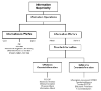

This learning object introduces the concept of the revolution in military affairs (RMA), of which information superiority and information operations are key concepts. The learning object discusses the development of (strategic) information operations concepts, as well as the change in military doctrine and organization. It uses examples from the NATO intervention in Kosovo in 1999 and from the Palestinian Intifada that began in September 2000. Further, we discuss new challenges for arms control and international law caused by the distinct characteristics of modern conflicts that are waged partly in the information domain.
The aim of this learning object is to understand the impact of information and communications technologies (ICT) on violent and non-violent conflicts, and, in particular, to assess how the information revolution has changed military strategies and operations. You will be able to describe the driving forces behind the current revolution in military affairs (RMA) and the related concepts of information superiority and information operations. You will also learn about the many uses of the Internet in conflicts outside the military realm. You will be able to explain how asymmetric vulnerability develops from the utilization of ICT, and you will recognize political and legal issues related to offensive information operations.
Since the mid-1990s, the discussion about security issues related to the information revolution has shifted. Originally considered a technical issue, security regarding information and communications technology (ICT) has made its way into the political debate and from there into the academic realm. The security debate with regard to ICT was initiated by the military after the Gulf War in the early 1990s, which showed the US military the huge benefits of using ICT to improve the more traditional systems that apply military force. Information superiority and information operations are the most important features of the current revolution in military affairs (RMA) and are discussed below. The two examples are Operation Allied Force, which was conducted by NATO in Kosovo from March to June 1999, and the Intifada in the Israeli-occupied territories.
Along with the evolution of these concepts, an increasing number of actors gained access to powerful tools for the rapid collection, production, and dissemination of information on a global scale, thus increasing their impact on conflict situations. This learning object gives an overview of the many ways the Internet can be used in conflicts, and it touches upon the challenges to both international law and arms control, raising fundamental questions about the control of information operation tools. Finally, it deals briefly with the protection of critical infrastructures affected by information operation tools.
Before continuing, please complete the following exercise.
There is ongoing debate in defense circles about how the use of modern information and communications technologies (ICT) changes military affairs. The US is leading the resulting revolution in military affairs (RMA). RMA refers to the strategic, operational, and tactical consequences of applying systems that collect, process, and communicate information to those that apply military force. RMA aims to transform the armed forces and war fighting by digitizing the battle space and by adopting new doctrines and organizational forms.
A revolution in military affairs can be understood as a fundamental change in the way military strategy and operations are planned and conducted. RMA is driven by technological innovation, operational innovations, societal changes, or a combination of these factors. The origins of the current RMA can be traced back to the late 1970s, when the development of precision-guided munitions and off-board sensors marked the beginning of the fusion of high-tech systems with conventional weapons. In the early 1980s, Soviet officials started to speak of a "military-technical revolution"; the concepts they developed were adopted by the US and implemented in the US debate that took off in the early 1990s.
- Rapid technological advance, especially with the so-called information revolution
- The end of the Cold War and a change in the threat environment leading to new security challenges
- A decline in defense budgets, which make a reorganization of the military necessary
The Gulf War in 1991 first made the idea of a high-tech, low-casualty, sterile form of warfare popular among military officials. US experts believe that the current RMA will reinforce America's information edge (Nye and Owens, 1996), that is, its military superiority over and above that of any other country or even of any group of countries. They claim that speed, knowledge, and precision will minimize casualties and lead to the rapid resolution of wars, thus minimizing the problems associated with the political utility of force, reducing risks enough to maintain public support for military operations. The key resources of conflicts are no longer the physical weapons alone but now include abstract information processes and contents. Thus, the object of warfare has shifted from the physical to the abstract.
 Go to the Information Warfare Site, an online
resource that aims to stimulate debate about
various subjects, including information
security, information operations, and
e-commerce.
Go to the Information Warfare Site, an online
resource that aims to stimulate debate about
various subjects, including information
security, information operations, and
e-commerce.
- First phase:
- In the first phase, emerging and enabling technologies are adapted for military purposes and are then integrated into existing structures.
- Second phase:
- In the second phase, military doctrine and organizational changes are adapted to suit the new capabilities.
- Third phase:
- In the third phase, notably different ways of looking at military operations and the conduct of war emerge.
Before continuing, please complete the following exercises.
- Information Superiority
- Military forces are considered to have information superiority if they have a relative advantage in their access to information. Information superiority allows friendly forces to collect, control, exploit, and defend information without significant opposition from adversaries. Information superiority is thought to be gained via the implementation of information operations.
- Information Operations
- Information operations are defensive and offensive operations, conducted in order to disrupt or confuse an enemy's ability to collect, process, and disseminate information. Information operations comprise two distinct but interrelated areas: information-in-warfare, which includes activities for gaining and exploiting information mainly linked to the gathering of intelligence; and information warfare, which covers "attack" and "defend" actions.

This figure shows the information superiority hierarchy proposed in the US Air Force Doctrine Document 2-5 on Information Operations. This is one of the more elaborate ways of defining information operations. (ISR stands for "intelligence, surveillance, reconnaissance"; PSYOP for "psychological operations"; and OPSEC for "operations security".)As this hierarchy shows, the concept of information operations is very broad and includes older concepts, such as psychological operations, electronic warfare, military deception, and physical attack. In addition, information operations can be carried out by a wide range of actors outside the military, including other governmental agencies, companies, criminal organizations, extra-parliamentary activist groups, and individuals. In the following section, we investigate the actors and their actions that are facilitated through use of the Internet.
Before continuing, please complete the following exercise.
Today, an ever-increasing range of actors has access to powerful tools for the rapid collection, production, and dissemination of information on a global scale. Electronic networks play a central role in this. The globalization and mass popularization of the Internet provide private individuals with capabilities that were previously only available to the largest and most powerful state entities.
- Actors
- The actors who use the Internet for various activities include individuals, groups and institutions, and state bodies
- Objectives
- The objectives, or intentions, of Internet users vary from the "peaceful" collection and dissemination of information to the aggressive use of the Internet with the intention to harm adversaries
- Effect Levels
- The levels at which an action can have an effect include the cultural, social, economic, political, and military levels; the effects of actions range from very short term to long term
- Impacts
- The impact (or outcome) of the use of the Internet ranges from the simple proliferation of ideas and opinions to increasingly blurred borders between war and peace.
For a more detailed overview of the four dimensions, consult the illustration.
In the following sections, we will look at the objectives in more detail, starting with the most peaceful use of the Internet and then turning to more aggressive uses.
In all conflicts, political rhetoric is designed to influence public opinion. The Internet is a valuable tool for promulgating more, and, in particular, more diverse, information. Organizations and individuals around the world use the Internet daily to publish information on any subject imaginable. During times of conflict, this channel becomes even more important: While governments and government-related organizations tend to upload material that supports their official policies, individuals have the ability to gather more, and more diverse, information even from within the conflict zone, and they also have a tool, in the Internet, with which to spread their views and opinions with little effort.
Operation Allied Force, conducted by NATO in Kosovo from 24 March to 10 June 1999 against Serbia became a precedent for later conflicts in which all sides, including a variety of civilian actors, had an active presence on the Internet. The electronic network was used extensively for the exchange and publication of conflict-relevant information, some of which could only be found online.
The NATO briefings during the Kosovo campaign began to evoke an increasing sense of frustration and irritation among journalists — NATO's aggressive information policy included the distribution of rumors, wild exaggerations, denials of accurate information, and the distribution of false and speculative stories. Thus, journalists looked to other means of getting information. Transcripts of NATO press briefings show that journalists actively used the Internet as an additional source of information.
Serbs used email distribution lists to reach tens of thousands of users, mostly in the United States. Their emails, which were for the most part sent to US news organizations, called for an end to the bombing. Some Serbs used heated anti-NATO rhetoric, others sent moving stories describing life during the bombings. Some newsgroups were flooded with thousands of postings on Kosovo each day. Most of the contributions added to the war of words and did little but abuse the other side. Others, however, contained interesting information or questioned the reliability of NATO's press briefings, pointing to inconsistencies in NATO's stories.
- Coordinating Actions and Recruiting Sympathizers
- Some parties in a conflict use the Internet to request support for political activities. The London-based Kosova Task Force, for example, relied on the Internet to coordinate its actions. To mobilize support, it distributed action plans to Muslims and to supporters of Kosovo. A US news article maintains that more than 1'000 volunteers in Belgrade, mainly students, worked intensively, debating the issue in online chat rooms, translating articles into English, updating websites, and networking with anti-NATO groups around the world (Satchell, Michael, "Captain Dragan's Serbian cybercops. How Milosevic took the Internet battlefield," U.S. News, 10 May 1999).
- Disseminating Propaganda
- A third and very important issue is the spread of false or intentionally misleading information. Propaganda and manipulation of information are not new phenomena, and they are not specific to the information age, but the speed with which information is circulated today and the broad distribution of such information add to the problem. Conflicts today are becoming so-called "news and propaganda wars", because the Internet, with its many advantages, has become a global propaganda tool for all sides, turning cyber-space into a kind of ethereal war zone in which a "soft war" is waged with electronic images and words as ammunition.
Before continuing, please complete the exercise below.
Commentators and reporters are especially fascinated with hacktivism. The word "hacktivism" was formed from the words "hacking" and "activism" and refers to hacking techniques undertaken for reasons of political activism, mostly directed against a target's Internet site, with the intention of disrupting normal operations without causing serious damage. For hacktivists, the Internet is mainly a tool for drawing attention to a cause; their actions gain further attention through news media keen to publish stories about such incidents.
There are numerous examples of hacktivism incidents. For instance, various Internet servers were attacked during the 1999 Kosovo conflict. Disruption of the NATO server began on 27 March 1999, a few days after the start of Operation Allied Force. The attacks on the NATO server included so-called "ping" bombardment to cause denial of service, email spamming attacks, and virus attacks. After the bombing of the Chinese embassy in Belgrade on 7 May 1999, Chinese hackers joined the online war. They targeted US government sites, including the White House site, which was unavailable for three days.
More aggressive actions do not merely deny access to information but can also cause destruction by replacing content, an action called "defacing": The Serb hacker group CHC, for example, replaced two US government sites with anti- NATO sites at the beginning of April 1999, calling NATO the National American Terrorist Organization. On the opposing side, Dutchthreat, a Dutch hacker group, broke into Yugoslav web servers and replaced an anti-NATO site with a pro-NATO Help Kosovo page.
 Go to the Attrition.org site, which contains the
largest mirror of website defacements.
Go to the Attrition.org site, which contains the
largest mirror of website defacements.
In the Middle East, hacktivism attacks began in October 2000, shortly after the second Intifada began. In February 2001, a private security consultancy found that more than 90 Israeli sites, mainly business and governmental sites, and 25 pro-Palestinian sites had been attacked or defaced. Prominent sites among those were the Hizbollah website, the Hizbollah's Al-Manar Television website, the Israeli government portal, and the Israeli Foreign Ministry, Knesset, army, and stock exchange websites.
Denial-of-service and defacement attacks are usually directed against an organization's public face and are relatively harmless, even though they are considered an inconvenience and an embarrassment. But the success of such attacks is generally limited, especially since most of the attackers involved are teenagers.
Some incidents, however, were serious enough to significantly scare officials: For example, Palestinian groups effectively shut down NetVision, Israel's leading Internet service provider, and revealed a vulnerability not realized before in Israel's Internet infrastructure and web security. After the American-Israel Public Affairs Committee (AIPAC) site was broken into, the FBI reacted with warnings on potential dangers to websites in the US. A Palestinian hacker gained access to the credit card numbers of more than 200 AIPAC members, boasting about the attack in an email to 3'500 members. Some also suspected that there may have been a connection between the attacks and the increased reluctance of consumers of Israeli e-commerce sites to supply credit card details, as well as a drop in the share prices of Israel-based Internet companies.
The most serious attacks occur in cyber-war or full-scale information warfare. Even though the media tend to exaggerate stories involving hostile activities and cyber-war, attacks that cause severe damage or threaten lives, and strategic information warfare at state level, still remain theory. There is substantial evidence disproving the rumors that the US launched the first offensive cyber-war in history during the 1999 Operation Allied Force.
The many publications and press releases on this topic, as well as military rhetoric before and during the Kosovo conflict, raised expectations that the newly available information operations tools would be used in the conflict. The rumors reached a first high at the end of May, when a Newsweek article reported the launch of computer attacks on Yugoslav systems by the US (Vistica, Gregory L., "Cyberwar and Sabotage," Newsweek, 31 May 1999). According to the article, defense analysts had said that US computer hackers had burrowed into Serb government email systems to read Belgrade's emails daily, while some had infiltrated the Internet systems of banks around the world in search of accounts held by former Serb leader Slobodan Milosevic and other Serb leaders.
Later in 1999, the Washington Times picked up the story and wrote that even though details remained classified, top US military officials had now confirmed that the US had launched a computer attack on Yugoslav systems during NATO's air campaign. They referred to this as the first broad use of offensive cyber-warfare during a conflict, which was said to have "triggered a superweapon that had catapulted the country into a military era that could forever alter the ways of war and the progress of history." (Hoffmann, Lisa, "U.S. Opened Cyber-War During Kosovo Fight," Washington Times, October 24, 1999)
It should be noted that certain constraints still limit the use of the Internet in conflicts at a strategic level by state actors. In the case of the 1999 NATO campaign, the United States — along with other states — found that there was neither a clear legal basis for computer-attacks or for retaliation against possible Serb attacks. The uncertainty surrounding international law evoked fears that the offensive use of information operation tools might make US military commanders liable to war crimes charges, especially since the effects of information attacks are still unpredictable. Another constraint on the use of cyber-weapons was the fear of giving away too many secrets in this emerging technological field: Widespread use of these weapons and tools would probably accelerate and focus foreign military research on the US itself and threaten to deprive it of its information warfare edge in a field where enemies can catch up quickly and cheaply.
In the next section, we turn to the impact that the use of the Internet in conflicts has had on the nature of warfare.
Before continuing, please complete the exercise below.
- Proliferation and Diversification of Ideas and Opinions
- The use of the Internet in conflicts leads to a proliferation and diversification of voices by allowing a variety of actors to disseminate their views and opinions easily. Direct channels of communication and information distribution create wider and more transnational communities of the like-minded than was ever possible before. The Internet further facilitates the gathering of information during all phases of a conflict. Traditional information monopolies cease to exist, and a relative transparency is established.
- Undermining the Credibility of State Actors
- The Internet, with its ability to distribute information quickly and easily, can undermine the credibility of officials and other actors. Naturally, this capacity has both positive and negative aspects, depending on one's perspective and the final consequences.
- Blurring the Boundaries Between the Military and Civilian Domains
- Even though modern high-tech conflicts are often pictured as less violent than traditional forms of warfare, the expansion of the battle space via the Internet may well result in increased civilian involvement in conflicts. Future warfare scenarios picture battlefields that incorporate entire societies. As a result, military objectives no longer focus on destroying orderly enemy lines but on eroding public support for the war within the enemy's country. This aspect is discussed in detail below.
Emerging military doctrine is much more than a mere set of guidelines for technology supported military operations; it openly looks at the use of non-military and asymmetrical alternatives in international conflicts. There is a clear message that the military will focus its activities in conflicts on information operations and will utilize these as a tool for international politics detached from military battlefield operations — e.g., it will conduct computer espionage and computer sabotage, as well as "truth projection" via electronic mass media at all times.
Inherent in many of the new military ideas is an extension of the battlefield to encompass the human mind as the ultimate target. Targets may exist in physical space or in cyber-space and can include human minds, with the objective of influencing people to make decisions and engage in the resulting activities. In this new notion of warfare, the military uses language, images, and information to assault the mind, reduce morale, and change the will of the people. But decision makers, policy makers, and military commanders are not the only targets of such assaults. Today, entire populations might be subjected to such attacks. This "militarization" of the public turns the public into a tool for warfare.
The trend towards more civilian involvement is not encouraging. Suddenly, frontlines are everywhere. Information Operations that are directed at society at large, rather than at its armed forces, necessarily fail to distinguish between civilian and military domains. The dual use of many assets and technologies makes this distinction even more difficult. The use of electronic network tools means bringing war to the civilian population, undermining morale and endangering lives.
There is an essential need to protect civilians. Without protection, they are key targets of these new forms of warfare by means such as the destruction of civilian installations or, worse still, the manipulation of the human mind. In this threat, the emerging doctrine represents a fundamental challenge to arms control and international law, where the fundamental questions of the control of information operation tools and the adjustment of international law to cover the new doctrinal ideas and intentions need to be addressed.
Before continuing, please complete the exercise below.
This learning object has introduced the concept of the revolution in military affairs (RMA), of which information superiority and information operations are key concepts. The learning object discussed the development of (strategic) information operations concepts, as well as the change in military doctrine and organization. It used examples from the NATO intervention in Kosovo in 1999 and from the Intifada in the Israeli-occupied territories. The learning object further dealt with the vulnerability that has evolved from the utilization of ICT for military affairs and the increasing dependence of society on ICT.
- The security debate with regard to ICT was initiated by the military after the Gulf War in the early 1990s. The Gulf War showed the US military the potential of applying ICT to the more traditional systems that apply military force.
- RMAs can be understood as a fundamental change in the way military strategy and operations are planned and conducted. An RMA can be driven by technological innovation, operational innovations, societal changes, or a combination of these factors. Previous RMAs have developed in similar ways: New technologies were adapted for military purposes and integrated into existing structures in the first phase; military doctrine and organizational changes were made to suit the new capabilities in the second phase; and notably different ways of looking at military operations and the conduct of war emerged in the third phase.
- US experts maintain that, due to today's ICT, speed, superior knowledge of the enemy, and precision of weapons will minimize casualties and lead to the rapid resolution of wars, thus minimizing the problems associated with the political utility of force and allowing governments to maintain public support for military operations.
- The key features of the current RMA are information superiority and information operations.
- The concept of information operations includes more than just issues relevant to operations carried out by military state actors. The Internet enables a wide range of non-traditional actors — with the necessary tools for collecting and disseminating information during all phases of a conflict — to create global networks and coordinate actions and to circulate propaganda and misinformation. At the same time, the credibility of state actors is more easily undermined. While it remains unclear what a full-scale cyber-war would look like, it is certain that the Internet changes several aspects of warfare and that offensive information operations will shift the battlefields towards civilian actors.
- One consequence of this development is that there is a trend towards more civilian involvement. This raises fundamental challenges with regard to how to control these emerging information operation tools in terms of arms control and international law, while states and the international community need to address the issue of how to protect critical infrastructures.


You have completed this learning object.
You have completed this learning object.
Please click on the button to close this window.